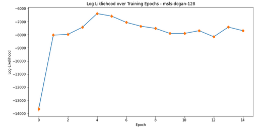

Dustin Wilson — February 8, 2022
I want to stress that this isn’t a strict replication of the original DCGAN papers. At a low-level, it’s difficult to describe all of the internal consequences of using PyTorch rather than the specific packages the authors used. At a high level, I made the following notable changes:
Use a Different Optimizer — Choose AdamW/FusedAdamW as an optimizer function over SGD. Goodfellow, et al. use a custom SGD implementation that is a patched version of pylearn2’s SGD. Instead, I elected for a built-in PyTorch optimizer, AdamW. As an added benefit, Habana offers their own FusedAdamW implementation that should perform quite well on the Gaudi instances.
Increase The Size of the Generator Feature Map — I increase the depth of the Generator feature map so that G’s depth outnumbered D’s 4-to-1. This is a balancing act; because the images are so small, a large enough parameter space could easily over-fit on the sample data. Additionally, the original model was very small, so increasing the size allows the HPU the opportunity to excel a bit.
Remove the Sigmoid From the Discriminator — This one sounds more controversial than it is. Typically a binary classification problem like the one D solves would use Binary Cross Entropy Loss (BCELoss). The way that PyTorch optimizes for mixed-precision operations required I switch to BCEWithLogitLoss, a loss function that expects logits (L∈(−∞,∞)) rather than probabilities (p∈[0,1]). In effect, this change moves the Sigmoid from the network to part of the loss function.
Add an Additional Convolutional Block — I add an additional block of Conv2d, BatchNorm2d, and Relu layers to start the model. This allows me to handle for images at (3 x 128 x 128), although getting stable training on these larger images took a bit of tuning, it was an interesting challenge to reason through all of this.
DCGAN can be unstable in comparison to modern generative models. The most common failure mode I observed involved was D learning the difference between test and real images too quickly (e.g. some property of fake images that made them easy to identify), and that left G to make trivial progress in generating better images over time. I didn’t have the time or resources to do full hyper-parameter tuning, so I used a few tricks heuristics suggested here and here to stabilize the model.
After some experimentation and consulting the literature1, I landed on the following parameters for my Safe-Params scenario. All of these choices are meant to be conservative in that they forsake optimal performance or faster model-convergence time in favor of stability of results. At the same time, I wasn’t hoping to train a 1B parameter model for ages. Again, this is a balancing act.
For reference, setting the noise value high can produce grainy results, but in practice, it’s an effective remedy against the generator collapsing (see: Amortised MAP Inference for Image Super-resolution1). I disabled the noise layer on DL1 instances to enable the Habana.DataLoader in lieu of the built-in PyTorch.dataloader.
Evaluating GANs is difficult because there’s no objective loss function for the results of the Generator. In Goodfellow, et al., the authors use Parzen Kernel-Density-Estimation to evaluate their architecture against other generative methods. In the years since, this method has been revealed to suffer from quite a few problems.
Parzen windows estimation of likelihood favors trivial models and is irrelevant to visual fidelity of samples. Further, it fails to approximate the true likelihood in high dimensional spaces or to rank models2
Other authors3 suggest alternative methods, though the most common ones rely on the existence of a pre-trained classifier model. A GAN that generates identifiable objects, (e.g. horses, faces, tea-kettles) might be better for these methods than my GAN. For completeness sake, I implemented and tested Parzen KDE as described in the paper, but found middling results. It didn’t seem to add much more over the G and D loss functions and I really couldn’t verify the validity of the metric. Consider the neg-log-likelihood plot from this 16 epoch training run. Following the first epoch, which was mostly white noise, the metric is largely unchanged through the remainder of the run.
| Experimental Output - Plot of Negative Log Likelihood Thru 16 Epochs |
|  |
Am I to interpret this as the generator failing to improve after the third epoch? Or perhaps even got worse as training progressed beyond the 5th? Because I got uncertain results here and the best alternatives (i.e. inception models) weren’t well suited to my problem, I abandoned quantitative GAN evaluation here.
1 Sønderby, Casper Kaae, et al. “Amortised map inference for image super-resolution.” arXiv preprint arXiv:1610.04490 (2016).
2 Borji, Ali. “Pros and cons of gan evaluation measures.” Computer Vision and Image Understanding 179 (2019): 41-65.
3 Salimans, Tim, et al. “Improved techniques for training gans.” Advances in neural information processing systems 29 (2016).